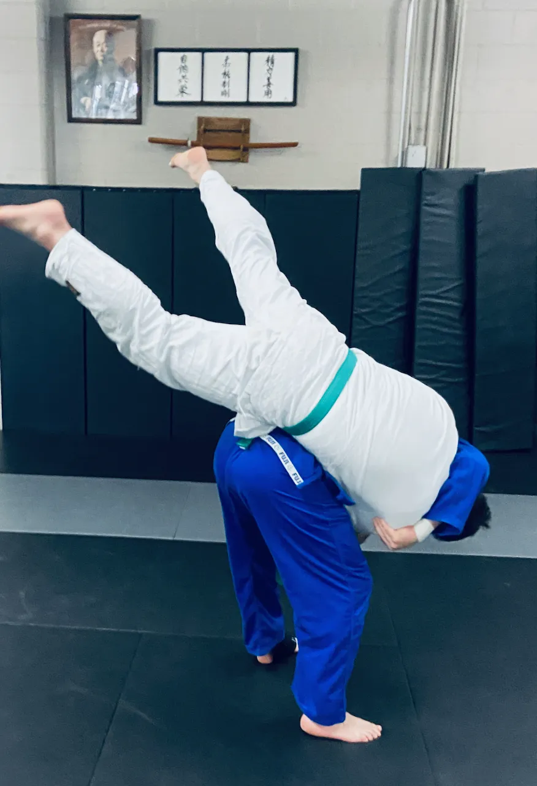
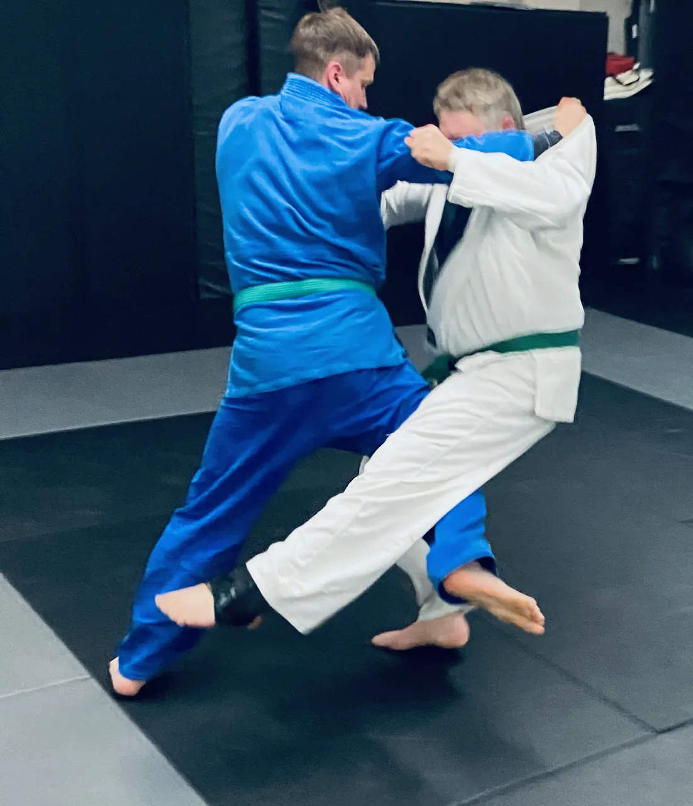
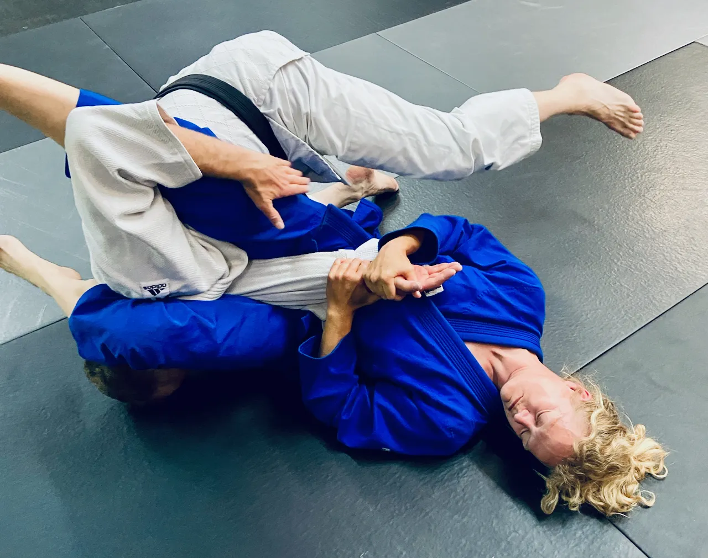

Clearwater Mixed
Martial Arts
Judo and Brazilian jiu jitsu on Tuesdays and Thursdays at 52 Ridge, Clearwater Valley Resort. Kids class at 5 pm, adults from 6 to 7:30 pm. $100 a month.
Schedule
Every week at 52 Ridge · Clearwater Valley Resort.
Tuesday
Kids5:00 pm
Adults6:00 – 7:30 pm
Thursday
Kids5:00 pm
Adults6:00 – 7:30 pm
Events
Judo and jiu jitsu tournaments, seminars and courses in BC and Alberta, plus our own club events. Subscribe and they show up in your calendar.
- NCCP Dojo Assistant / Dojo Instructor Course (Burnaby)Judo course · Odd Squad Productions Society / Police Judo, 5487 Lane St, Burnaby, BC · Judo BC
- NCCP Dojo Assistant / Dojo Instructor Course (Mile Zero)Judo course · Mile Zero Judo Club, Dawson Creek, BC · Judo BC
- Alberta Grappling OpenBJJ tournament · Alavanca Shawnessy, 14315 Macleod Trail S, Calgary, AB · Alavanca Shawnessy
- Compnet Nationals Canada 2026BJJ tournament · date tentative · Burnaby, BC · Compnet
- Florence Senda Cup (junior tournament)Judo tournament · Lethbridge, AB · Judo Alberta / Lethbridge
- Provincial Referee B & C Grading (Lethbridge)Judo course · Lethbridge, AB · Judo Alberta
On the mat
Photos from Ernst's previous club in Rocky Mountain House, Alberta.





Judo and jiu jitsu
柔道
Judo
“The gentle way.” Founded in Tokyo in 1882 by Jigorō Kanō. You learn to fall safely, to break someone's balance and to throw, then to pin. An Olympic sport since 1964.
柔術
Brazilian jiu jitsu
“The gentle art.” Judo master Mitsuyo Maeda taught it to the Gracie family in Brazil around 1917, and they built it into a complete ground game, where leverage lets a smaller person control a bigger one.
Both share the same root, 柔 (jū): give way to force, then redirect it.
Pricing
$100 / month
Family discounts are available. Ask us about them.
BC families can apply to KidSport BC or Canadian Tire Jumpstart for help with fees.
Your first class
Send us a message
Tell us who's coming and which class. We'll confirm and send the waiver.
Arrive ten minutes early
Sign the waiver, meet Ernst and see where to change. Parents are welcome to stay and watch.
Wear gym clothes
T-shirt, shorts or track pants with no zips or buttons. Bring water and sandals for off the mat. No gi needed yet.
Train
Bow in, warm up, learn to fall, learn one technique, then try it with a partner at your own pace.

Your coach
Ernst Bergmann · [ranks TBC]
Ernst taught judo and Brazilian jiu jitsu at Kuroi Ishi (黒い石, “black stone”) in Rocky Mountain House, Alberta, including self-defence for women and private lessons. He now lives in the Upper Clearwater Valley.
[A few words in Ernst's own voice, his ranks and lineage, and certifications to come.]
The dojo library
The posters on our walls: counting in Japanese, belt ranks, dojo words, throws, groundwork and where it all came from.
Find us
52 Ridge · Clearwater Valley Resort
373 Clearwater Valley Rd, Clearwater, BC
On Clearwater Valley Road, the road into Wells Gray Park.
Coming from Birch Island, Vavenby, Blackpool or Little Fort? Ask about carpooling. In winter, check DriveBC before you head out.
Open in Google MapsQuestions
Do I need to be fit or have any experience?
No. Most people start with no experience. You'll get fitter by training, and you always train at your own pace.
What's the difference between judo and jiu jitsu?
Judo is mostly standing: throws, then pins. Brazilian jiu jitsu is mostly on the ground: control and submissions. Jiu jitsu grew out of judo about a hundred years ago, so they fit together naturally.
Is it safe?
Everyone learns to fall before they learn to throw, and everyone learns to tap. Rounds are supervised and partners are matched by size and experience.
How much does it cost?
$100 a month. Family discounts are available; ask us.
Do I need a gi, and where can I buy one?
Not to start: gym clothes are fine for your first few classes. When you're ready, one plain white gi works for both arts while you're learning; a single-weave judo gi is fine for jiu jitsu. Expect about $90–160 for an adult gi and $40–90 for a child's. Canadian sellers avoid duty and cross-border shipping surprises: Fushida (Vancouver), Bushido (Langley), Matsuru, Kingz Canada and Stonebelt. Cotton gis shrink 3–5%, so use the brand's size chart, size up if you're between sizes, wash cold and hang to dry. Ask Ernst before you buy and he'll help with sizing.
Can I drop in while visiting Wells Gray?
Yes. Visitors, seasonal workers and crews in town for the summer are welcome. Message us before you come.
Contact
Message us to book a first class or ask a question. Parents are welcome to come and watch.
- Phone or text
- +1 (780) 720-1705
- Join the club group